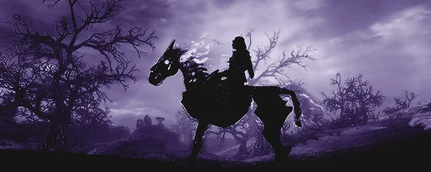
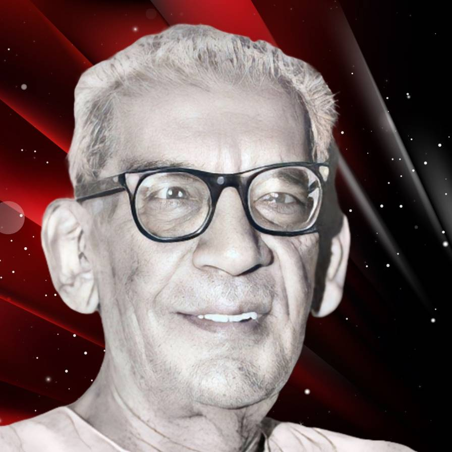

Homepage
Email
Israq's Library

Select your author
Humayun Ahmed
হুমায়ূন আহমেদ (১৩ নভেম্বর ১৯৪৮ - ১৯ জুলাই ২০১২) ছিলেন একজন বাংলাদেশি ঔপন্যাসিক, ছোটগল্পকার, নাট্যকার এবং গীতিকার, চিত্রনাট্যকার ও চলচ্চিত্র নির্মাতা। তিনি বিংশ শতাব্দীর অন্যতম জনপ্রিয় বাঙালি কথাসাহিত্যিক। তাকে বাংলাদেশের স্বাধীনতা পরবর্তী অন্যতম শ্রেষ্ঠ ও জনপ্রিয় লেখক বলে গণ্য করা হয়।
Read Books
Rakib Hasan
রকিব হাসান (জন্ম: ১৯৫০, কুমিল্লা) একজন বাংলাদেশী গোয়েন্দা কাহিনী লেখক। তিনি সেবা প্রকাশনী থেকে প্রকাশিত তিন গোয়েন্দা নামক গোয়েন্দা কাহিনীর স্রষ্টা, তবে তিনগোয়েন্দা সিরিজটি আলফ্রেড হিচককের থ্রি ইনভেস্টিগেটরস থেকে অনুপ্রাণিত। তার লেখা এই কিশোর সিরিজটি প্রথম আলো পত্রিকার জরিপে বাংলাদেশের কিশোরদের মধ্যে সবচেয়ে বেশি পাঠযোগ্য সিরিজ হিসেবে স্বীকৃতি পেয়েছে। মূলত মূল নামে লেখালেখি করলেও জাফর চৌধুরী ছদ্মনামেও সেবা প্রকাশনীর রোমহর্ষক সিরিজ লিখে থাকেন। এছাড়াও আবু সাঈদ ছদ্মনামটিও ব্যবহার করেছেন গোয়েন্দা রাজু সিরিজটি লেখার সময়।
Read Books
Satyajit Ray
সত্যজিৎ রায় (২ মে ১৯২১ – ২৩ এপ্রিল ১৯৯২) ছিলেন একজন ভারতীয় চলচ্চিত্র নির্মাতা, চিত্রনাট্যকার, শিল্প নির্দেশক, সংগীত পরিচালক এবং লেখক। তাঁকে বিংশ শতাব্দীর অন্যতম শ্রেষ্ঠ চলচ্চিত্র নির্মাতাদের একজন হিসেবে গণ্য করা হয়। সত্যজিতের জন্ম কলকাতা শহরে সাহিত্য ও শিল্প সমাজে খ্যাতনামা রায় পরিবারে। তার পূর্বপুরুষের ভিটা ছিল তৎকালীন ব্রিটিশ ভারতের কিশোরগঞ্জে (বর্তমানে বাংলাদেশ) কটিয়াদী উপজেলার মসূয়া গ্রামে। তিনি কলকাতার প্রেসিডেন্সি কলেজ ও শান্তিনিকেতনে রবীন্দ্রনাথ ঠাকুর প্রতিষ্ঠিত বিশ্বভারতী বিশ্ববিদ্যালয়ে পড়াশোনা করেন। সত্যজিতের কর্মজীবন একজন বাণিজ্যিক চিত্রকর হিসেবে শুরু হলেও প্রথমে কলকাতায় ফরাসি চলচ্চিত্র নির্মাতা জঁ রনোয়ারের সাথে সাক্ষাৎ ও পরে লন্ডন শহরে সফররত অবস্থায় ইতালীয় নব্য বাস্তবতাবাদী চলচ্চিত্র লাদ্রি দি বিচিক্লেত্তে (ইতালীয়: Ladri di biciclette, বাইসাইকেল চোর) দেখার পর তিনি চলচ্চিত্র নির্মাণে উদ্বুদ্ধ হন।
Read Books
Sunil Gangopadhyay
সুনীল গঙ্গোপাধ্যায় (৭ সেপ্টেম্বর ১৯৩৪ – ২৩ অক্টোবর ২০১২)[১] বিশ শতকের শেষভাগে সক্রিয় একজন প্রথিতযশা বাঙালি সাহিত্যিক। ২০১২ খ্রিষ্টাব্দে মৃত্যুর পূর্ববর্তী চার দশক তিনি বাংলা সাহিত্যের অন্যতম পুরোধা ব্যক্তিত্ব হিসাবে সর্ববৈশ্বিক বাংলা ভাষার জনগোষ্ঠীর কাছে ব্যাপকভাবে পরিচিত ছিলেন। বাংলা ভাষায় এই ভারতীয় সাহিত্যিক একাধারে কবি, ঔপন্যাসিক, ছোটোগল্পকার, সম্পাদক, সাংবাদিক ও কলামিস্ট হিসাবে অজস্র স্মরণীয় রচনা উপহার দিয়েছেন। তিনি আধুনিক বাংলা কবিতার জীবনানন্দ-পরবর্তী পর্যায়ের অন্যতম প্রধান কবি। একই সঙ্গে তিনি আধুনিক ও রোমান্টিক। তার কবিতার বহু পঙ্ক্তি সাধারণ মানুষের মুখস্থ। সুনীল গঙ্গোপাধ্যায় "নীললোহিত", "সনাতন পাঠক", "নীল উপাধ্যায়" ইত্যাদি ছদ্মনাম ব্যবহার করেছেন।
Read Books

Sharadindu Bandyopadhyayy
শরদিন্দু বন্দ্যোপাধ্যায় (৩০ মার্চ ১৮৯৯ - ২২ সেপ্টেম্বর ১৯৭০) ছিলেন একজন ভারতীয় বাঙালি লেখক। তাঁর জন্ম উত্তরপ্রদেশের জৌনপুর শহরে নিজ মাতুলালয়ে। আদিনিবাস পশ্চিমবঙ্গ রাজ্যস্থিত উত্তর কোলকাতার বরানগর কুঠিঘাট অঞ্চল[১][২]৷ তাঁর রচিত প্রথম সাহিত্য প্রকাশিত হয় তার ২০ বছর বয়সে, যখন তিনি কলকাতায় বিদ্যাসাগর কলেজে আইন নিয়ে পড়াশুনো করছিলেন। পড়াশুনোর সাথেই তিনি সাহিত্য চর্চাও করতে থাকেন। তার সৃষ্ট গোয়েন্দা চরিত্র ব্যোমকেশ বক্সী আত্মপ্রকাশ করে ১৯৩২ সালে।
Read Books
Arthur Conan Doyle
Sir Arthur Ignatius Conan Doyle KStJ, DL (22 May 1859 – 7 July 1930) was a British writer and physician. He created the character Sherlock Holmes in 1887 for A Study in Scarlet, the first of four novels and fifty-six short stories about Holmes and Dr. Watson. The Sherlock Holmes stories are milestones in the field of crime fiction.
Read Books